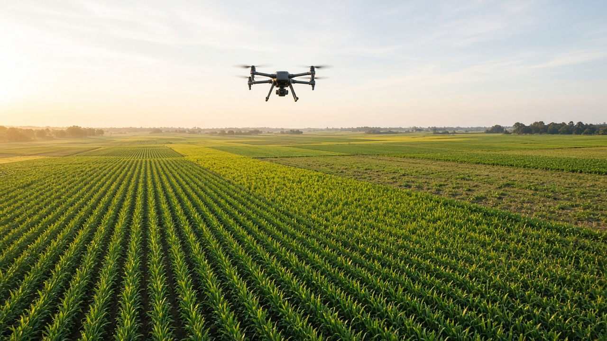
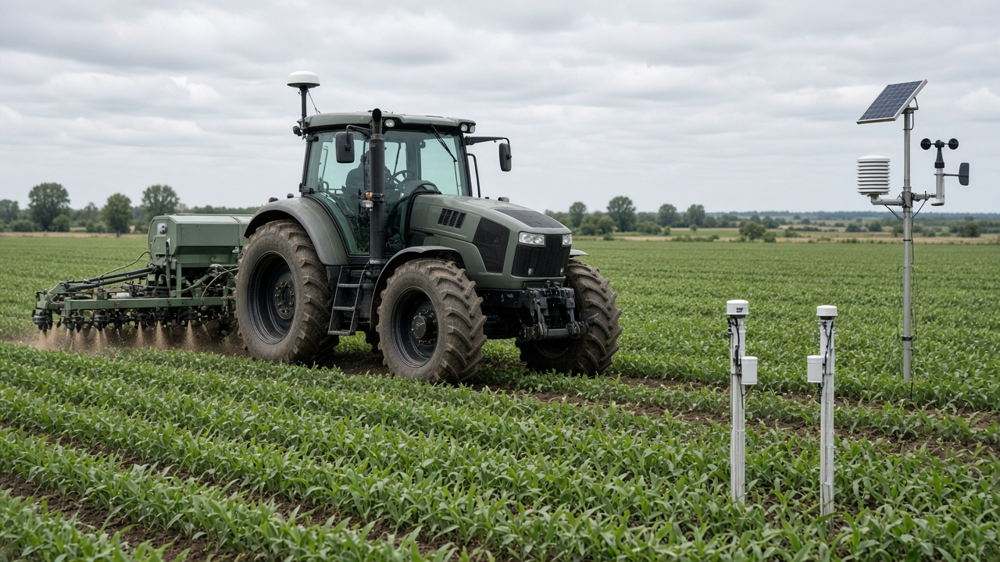
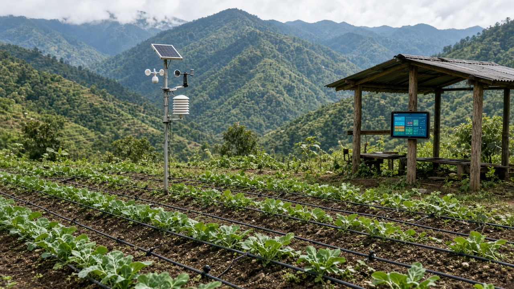

Precision Agriculture and Smart Farming
Published on August 20, 2026

Precision agriculture uses data, sensors, and digital tools to manage fields at a granular level, applying water, fertilizer, and crop protection only where and when they are needed. Global positioning systems, drones, and satellite imagery map soil variability, crop health, and moisture conditions across large areas with remarkable accuracy. Variable-rate technology adjusts seeding density and input application in real time, reducing waste and environmental impacts while maintaining or improving yields. Smart farming integrates Internet-connected devices, weather stations, and farm management software to automate irrigation schedules and alert growers to pest or disease risks early.
Benefits include lower input costs, reduced nutrient runoff into waterways, and more efficient use of fuel and labor on mechanized operations. Smallholders can adopt scaled-down versions through smartphone apps that provide localized weather forecasts, market prices, and extension advice in local languages. Data collected over multiple seasons builds a historical record that helps farmers plan rotations, compare variety performance, and negotiate fair prices with buyers. Connectivity challenges in rural areas remain a barrier, but community networks, solar-powered base stations, and offline-capable applications are expanding access in developing regions.
Ethical and privacy considerations arise when farm data is stored on corporate cloud platforms or shared with input suppliers without transparent consent. Training programs ensure that operators understand how to interpret sensor readings and avoid over-reliance on automated recommendations without field verification. Governments support open-data initiatives and interoperability standards so farmers retain ownership of their information. By combining technology with ecological knowledge, precision agriculture can contribute to sustainable intensification that feeds growing populations while conserving soil, water, and biodiversity for future generations. Young farmers entering the profession find digital tools especially helpful for managing complex farm operations efficiently.

शुद्ध कृषिले डाटा, सेन्सर र डिजिटल उपकरण प्रयोग गरेर खेतलाई सूक्ष्म स्तरमा व्यवस्थापन गर्छ, पानी, मल र बाली संरक्षण मात्र आवश्यक ठाउँ र समयमा लागू गर्छ। वैश्विक स्थिति प्रणाली, ड्रोन र उपग्रह छविले माटोको भिन्नता, बाली स्वास्थ्य र नमी अवस्था ठूला क्षेत्रमा उच्च शुद्धतासँग नक्सांकन गर्छ। परिवर्तनशील दर प्रविधिले बीउ रोपाइँ घनत्व र सामग्री प्रयोग वास्तविक समयमा समायोजन गर्छ, फोहोर र वातावरणीय प्रभाव घटाउँदै उत्पादन कायम वा सुधार गर्छ। स्मार्ट खेतीले इन्टरनेट जडान उपकरण, मौसम स्टेशन र खेत व्यवस्थापन सफ्टवेयर एकीकृत गरेर सिँचाइ तालिका स्वचालित र कीरा वा रोग जोखिम चाँडै सूचित गर्छ।
लाभहरूमा कम सामग्री लागत, जलमार्गमा पोषक तत्व बहिर्वाह घटाउने र यान्त्रिक कार्यमा इन्धन र श्रमको प्रभावकारी प्रयोग समावेश छ। साना किसानले स्मार्टफोन एप मार्फत स्थानीय मौसम पूर्वानुमान, बजार मूल्य र स्थानीय भाषामा विस्तार सल्लाह पाउने सानो स्तरको संस्करण अपनाउन सक्छन्। धेरै मौसमको डाटाले ऐतिहासिक रेकर्ड बनाउँछ जसले किसानलाई परिक्रमा योजना, जात तुलना र निष्पक्ष मूल्य वार्तामा मद्दत गर्छ। ग्रामीण क्षेत्रमा जडान चुनौती रहँदा पनि, सामुदायिक सञ्जाल, सौर्य स्टेशन र अफलाइन एपले पहुँच विस्तार गर्दैछ।
खेत डाटा व्यापारिक क्लाउडमा भण्डारण वा सहमति बिना आपूर्तिकर्तासँग साझेदारी गर्दा नैतिक र गोपनीयता चिन्ता उत्पन्न हुन्छ। तालिम कार्यक्रमले सञ्चालकहरूलाई सेन्सर पढाइ बुझ्न र क्षेत्र प्रमाणीकरण बिना स्वचालित सिफारिसमा अत्यधिक भर नपर्न सिकाउँछ। सरकारले खुला डाटा र अन्तर-सञ्चालन मापदण्ड समर्थन गर्छ ताकि किसान आफ्नो जानकारीको स्वामित्व राखून्। प्रविधि र पारिस्थितिक ज्ञान संयोजन गरेर, शुद्ध कृषिले माटो, पानी र जैविक विविधता संरक्षण गर्दै बढ्दो जनसंख्या खुवाउने दिगो घनत्व वृद्धिमा योगदान दिन सक्छ।

सटीक कृषि डेटा, सेंसर और डिजिटल उपकरणों से खेत का सूक्ष्म स्तर पर प्रबंधन करती है, पानी, उर्वरक और फसल संरक्षण केवल आवश्यक स्थान और समय पर लागू करती है। वैश्विक स्थिति प्रणाली, ड्रोन और उपग्रह छवि बड़े क्षेत्र में मिट्टी की भिन्नता, फसल स्वास्थ्य और नमी की स्थिति उच्च शुद्धता से मानचित्रित करती है। परिवर्तनशील दर प्रौद्योगिकी बीज बोने की घनत्व और सामग्री प्रयोग वास्तविक समय में समायोजित करती है, अपशिष्ट और पर्यावरणीय प्रभाव घटाते हुए उपज बनाए रखती या सुधारती है। स्मार्ट खेती इंटरनेट जुड़े उपकरण, मौसम स्टेशन और खेत प्रबंधन सॉफ्टवेयर एकीकृत करके सिंचाई अनुसूची स्वचालित और कीट या रोग जोखिम शीघ्र सूचित करती है।
लाभों में कम सामग्री लागत, जलमार्ग में पोषक तत्व बहिर्वाह घटाना और यांत्रिक कार्य में ईंधन व श्रम का प्रभावी उपयोग शामिल है। छोटे किसान स्मार्टफोन ऐप के माध्यम से स्थानीय मौसम पूर्वानुमान, बाज़ार मूल्य और स्थानीय भाषा में विस्तार सलाह पाने वाले छोटे स्तर के संस्करण अपना सकते हैं। कई मौसम का डेटा ऐतिहासिक रिकॉर्ड बनाता है जो किसानों को चक्र योजना, किस्म तुलना और निष्पक्ष मूल्य वार्ता में मदद करता है। ग्रामीण क्षेत्र में कनेक्टिविटी चुनौती रहने पर भी, सामुदायिक नेटवर्क, सौर्य स्टेशन और ऑफलाइन ऐप पहुँच विस्तार कर रहे हैं।
खेत डेटा कॉर्पोरेट क्लाउड में भंडारण या सहमति बिना आपूर्तिकर्ता के साथ साझा करने पर नैतिक और गोपनीयता चिंता उत्पन्न होती है। प्रशिक्षण कार्यक्रम संचालकों को सेंसर पढ़ाई समझना और क्षेत्र प्रमाणीकरण बिना स्वचालित सिफारिश पर अत्यधिक भरोसा न करना सिखाते हैं। सरकार खुला डेटा और अंतर-संचालन मानक का समर्थन करती है ताकि किसान अपनी जानकारी का स्वामित्व रखें। प्रौद्योगिकी और पारिस्थितिक ज्ञान के संयोजन से, सटीक कृषि मिट्टी, जल और जैव विविधता संरक्षित करते हुए बढ़ती जनसंख्या को खिलाने वाली दिगो घनत्व वृद्धि में योगदान दे सकती है।